In this lab, you will learn how AXI interfaces are implemented using Vitis Model Composer.
You will save the design in IP catalog format and use the resulting IP in the Vivado® IP integrator environment.
Then you will see how IP integrator enhances your productively by supplying connection assistance when you use AXI interfaces.
Objectives
After completing this lab, you will be able to:
Implement AXI interfaces in your designs.
Add your design as IP in the Vivado IP catalog.
Connect your design in IP integrator.
Procedure
This lab has four primary parts:
In Step 1, you will review how AXI interfaces are implemented using Vitis Model Composer.
In Step 2, you will create a Vivado project for your Vitis Model Composer IP.
In Step 3, you will create a design in IP integrator using the Vitis Model Composer IP.
In Step 4, you will implement the design and generate an FPGA bitstream (the file used to program the FPGA).
Step 1: Review the AXI Interfaces
In this step you review how AXI interfaces are defined and created.
Invoke Vitis Model Composer and use the Current Folder browser to change the directory to \HDL_Library\Lab5.
Type open Lab5_1.slx in the Command Window.
This opens the design shown in the following figure.
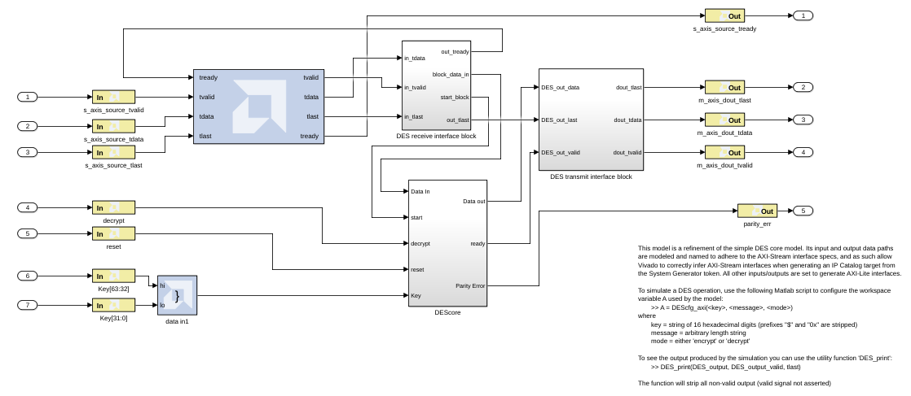
This design uses a number of AXI interfaces. You will review these shortly.
Using AXI interfaces allows a design exported to the Vivado IP catalog to be efficiently integrated into a larger system using IP integrator.
It is not a requirement for designs exported to the IP catalog to use AXI interfaces.
This design uses the following AXI interfaces:
An AXI4-Stream interface is used for ports s_axis_source_*. All Gateway In and Out signals are prefixed with the same name (s_axis_source_), ensuring they are grouped into the same interface. The suffixes for all ports are valid AXI4-Stream interface signal names (tready, tvalid, tlast and tdata).
An AXI4-Stream interface is used for ports m_axis_dout_*.
An AXI4-Lite interface is used for the remaining ports. You can confirm this using the following steps:
Double-click Gateway In instance decrypt (or any of reset, Keys[63:32], Keys[31:0], or parity_err).
In the Properties Editor select the Implementation tab.
Confirm the Interface is specified as AXI4-Lite in the Interface options.
Click OK to exit the Properties Editor.
Details on simulating the design are provided in the canvas notes. For this exercise, you will concentrate on exporting the design to the Vivado IP catalog and use the IP in an existing design.
Step 2: Create a Vivado Project using Vitis Model Composer HDL IP
In this step you create a Vivado project which you will use to create your hardware design.
Double-click the System Generator token to open the Properties Editor.
In the Properties Editor, make sure IP catalog is selected for the Compilation type.
Click Generate to generate a design in IP catalog format.
Click OK to dismiss the Compilation status dialog box.
Click OK to dismiss the System Generator token.
The design has been written in IP catalog format to the directory ./IPI_Project. You will now import this IP into the Vivado IP catalog and use the IP in an existing example project.
Open the Vivado IDE using Windows > Xilinx Design Tools > Vivado 2021.2.
Click Create Project.
Click Next.
Enter \HDLLibrary\Lab5\IPIProject for the Project Location
⭐ Tip: You will have to manually type /IPI_Project in the Project location box to create the IPI_Project directory.
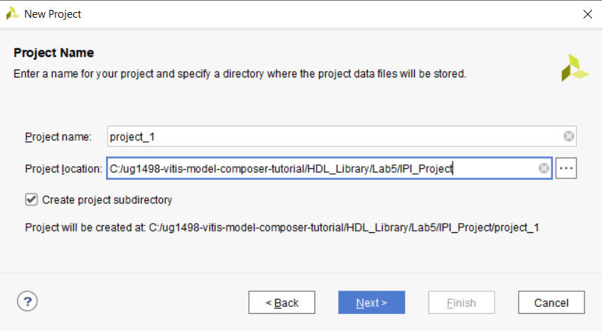
Click Next.
Select both RTL Project and Do not specify sources at this time and click Next.
Select Boards and ZYNQ-7 ZC702 Evaluation Board as shown in the next figure.
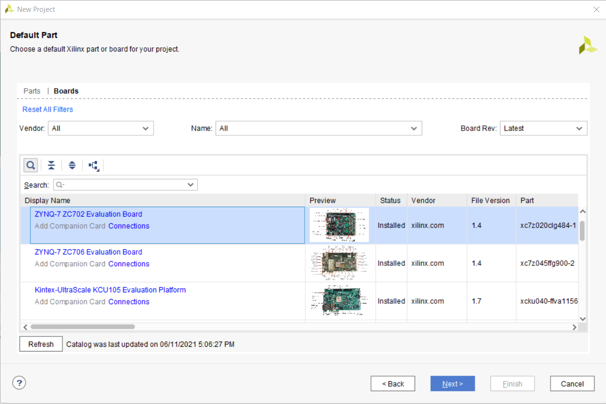
Click Next.
Click Finish.
You have now created a Vivado project based on the ZC702 evaluation board.
Step 3: Create a Design in IP Integrator
In this step you will create a design using the Vitis Model Composer IP.
Click Create Block Design in the Flow Navigator pane.
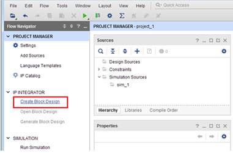
In the Create Block Design dialog box, click OK to accept the default name.
You will first create an IP repository for the Vitis Model Composer IP, and add the IP to the repository.
In the Settings dialog box, select IP > Repository under Project Settings and click the Add Repository button to add a repository.
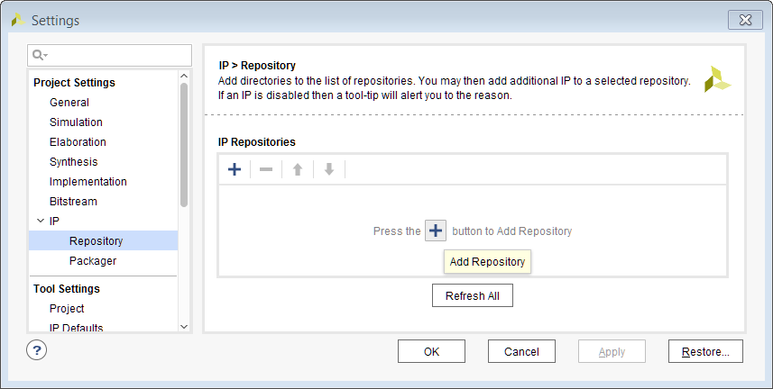
In the IP Repositories dialog box, navigate to the following directory:
\HDL_Library\Lab5\IPI_Project\ip
With folder ip selected, click Select to create the new repository as shown in the following figure.
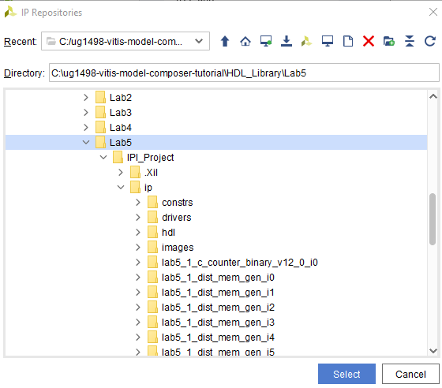
Click OK to exit the Add Repository dialog box.
Click OK to exit the Settings dialog box.
Click the Add IP button in the center of the canvas.
Type zynq in the Search field.
Double-click ZYNQ7 Processing System to add the CPU.
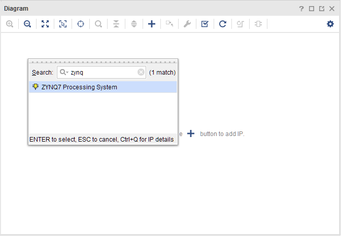
Click Run Block Automation as shown in the following figure.
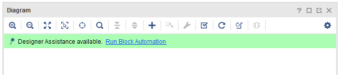
Leave Apply Board Preset selected and click OK. This will ensure the design is automatically configured to operate on the ZC702 evaluation board.
Right-click anywhere in the block diagram and select Add IP.
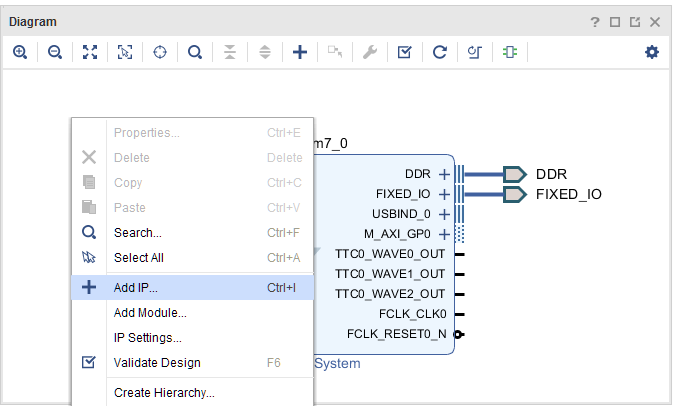
Type lab5 in the Search dialog box.
Double-click lab5_1 to add the IP to the design.
You will now connect the IP to the rest of the design. Vivado IP integrator provides automated assistance when the design uses AXI interfaces.
Click Run Connection Automation (at the top of the design canvas).
Click OK to accept the default options ( lab510/lab51saxi to processingsystem70/MAXI_GP0 ) and connect the AXI4-Lite interface to the Zynq®-7000 IP SoC.
Double-click the ZYNQ7 Processing System to customize the IP.
Click the PS-PL Configuration as shown in the following figure.
Expand the HP Slave AXI Interface and select the S AXI HP0 interface.
Make sure to check the box next to S AXI HP0 interface.
Click OK to add this port to the Zynq Processing System.
On the Model Composer IP lab5_1 block, click the AXI4-Stream input interface port s_axis_source and drag the mouse. Possible valid connections are shown with green check marks as the pencil cursor approaches them. Drag the mouse to the S_AXI_HP0 port on the Zynq Processing System to complete the connection.
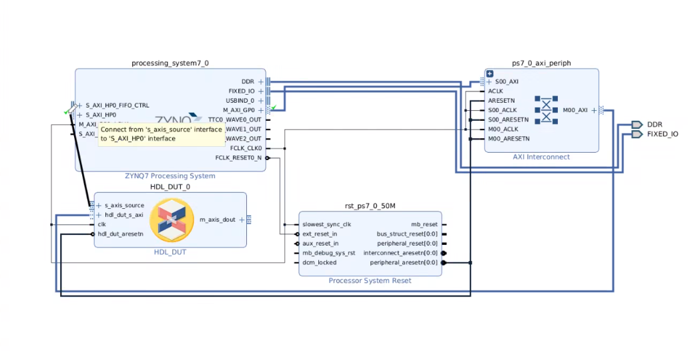
Click OK in the Make Connection dialog box.
Click Run Connection Automation to connect the AXI4-Lite interface on the AXI DMA to the processor.
Click OK to accept the default.
Use the Validate Design toolbar button to confirm the design has no errors.
Click OK to close the Validate Design message.
The design from Vitis Model Composer has now been successfully incorporated into an IP integrator design. The IP in the repository can be used within any Vivado project, by simply adding the repository to the project.
You will now process the design through to bitstream.
Step 4: Implement the Design
In this step, you will implement the IP integrator design and generate a bitsteam.
In the Flow Navigator, click Project Manager to return to the Project Manager view.
In the Sources browser in the main workspace pane, a Block Diagram object called design_1 is at the top of the Design Sources tree view.
Right-click this object and select Generate Output Products.
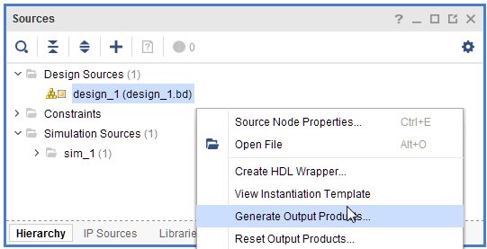
In the Generate Output Products dialog box, click Generate to start the process of generating the necessary source files.
When the generation completes, right-click the design_1 object again, select Create HDL Wrapper, and click OK (and let Vivado manage the wrapper) to exit the resulting dialog box.
The top level of the Design Sources tree becomes the design1wrapper.v file. The design is now ready to be synthesized, implemented, and have an FPGA programming bitstream generated.
In the Flow Navigator, click Generate Bitstream to initiate the remainder of the flow.
Click Yes, and from the launch runs window click OK to generate the synthesis and implementation files.
fIn the dialog that appears after bitstream generation has completed, select Open Implemented Design and click OK.
After you view your implemented design, exit the Vivado IDE.
Summary
In this lab, you learned how AXI interfaces are added to a Vitis Model Composer design and how a Vitis Model Composer design is saved in the IP catalog format, incorporated into the Vivado IP catalog, and used in a larger design. You also saw how the IP integrator can substantially increase productivity with connection automation and hints when AXI interfaces are used in your design.
The following solution directory contains the final Vitis Model Composer ( *.slx ) files for this lab. The solution directory does not contain the IP output from Vitis Model Composer or the files and directories generated by Vivado.